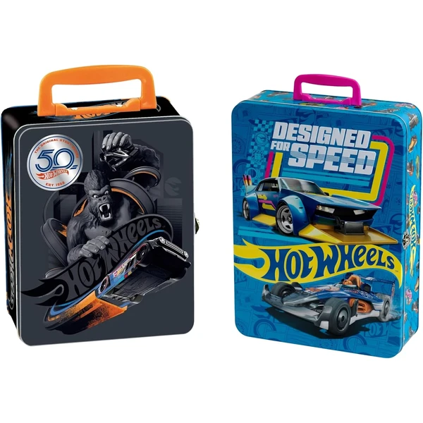
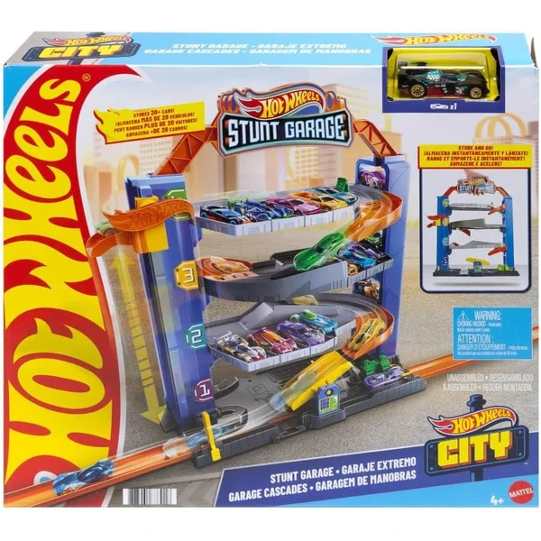
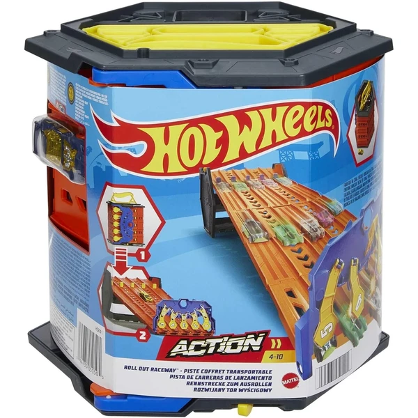

Hot Wheels Pack de 5 Coches
Un pack de 5 coches Hot Wheels a escala 1:64 con temáticas variadas, un formato práctico para completar la colección poco a poco.
⭐ ¿Por qué nos gusta?
- ✔ 5 coches con temáticas distintas.
- ✔ Escala 1:64, detalles auténticos.
- ✔ Formato compacto, fácil de combinar con otros packs.
💬 Lo que más destacan las familias
Lo que más suele gustar es que sea un formato asequible para ir ampliando la colección sin gastar mucho de golpe. Las distintas temáticas también dan pie a encontrar el modelo favorito de cada peque.
Ver en Amazon

Hot Wheels Triple Looping
Una pista con tres loopings, tres zonas de choque y tres propulsores, pensada para lanzar los coches a toda velocidad sin que choquen entre ellos.
⭐ ¿Por qué nos gusta?
- ✔ Triple looping y tres zonas de choque.
- ✔ Tres propulsores para dar velocidad a los coches.
- ✔ Se conecta con otras pistas Hot Wheels.
💬 Lo que más destacan las familias
Lo que más suele gustar es el reto de superar los tres loopings sin que los coches choquen, algo que engancha bastante a los más competitivos. El tamaño de la pista también se valora porque da mucho espectáculo en poco espacio de montaje.
Ver en Amazon

Hot Wheels Torre de Choques en el Aire
Una torre de más de 80 cm con propulsor a pilas para lanzar los coches y hacer saltos, con capacidad para aparcar más de 20 vehículos. Incluye un coche Hot Wheels y se pliega para guardar fácilmente.
⭐ ¿Por qué nos gusta?
- ✔ Propulsor a pilas para hacer saltos en el aire.
- ✔ Aparcamiento para más de 20 coches.
- ✔ Se pliega para guardar fácilmente.
💬 Lo que más destacan las familias
Muchos padres destacan que el propulsor a pilas añade un punto extra de emoción a los saltos, algo que no tienen las pistas básicas. El diseño plegable también se valora porque no ocupa demasiado espacio al guardarla.
Ver en Amazon

Theo Klein Maletín para 50 Coches
Un maletín de metal de gran capacidad con separadores internos para guardar hasta 50 coches Hot Wheels, con asa de transporte para llevarlo de un lado a otro.
⭐ ¿Por qué nos gusta?
- ✔ Guarda hasta 50 coches Hot Wheels.
- ✔ Asa de transporte, fácil de llevar.
- ✔ Estructura de metal resistente.
💬 Lo que más destacan las familias
Muchos padres destacan que es la opción ideal cuando la colección ya es grande y el maletín pequeño se queda corto. El asa de transporte también se valora porque hace cómodo llevarlo de viaje.
Ver en Amazon

Hot Wheels Track Builder Lata de Gasolina
Una caja de pistas con forma de bidón que se transforma en parte del circuito, con piezas compatibles con otros sets de Hot Wheels. Incluye un vehículo para empezar a jugar.
⭐ ¿Por qué nos gusta?
- ✔ El envase se transforma en parte de la pista.
- ✔ Compatible con otros sets Hot Wheels.
- ✔ Incluye un vehículo Hot Wheels.
💬 Lo que más destacan las familias
Se repite bastante el comentario de que aprovechar la propia caja como parte del circuito es un acierto, sin piezas sueltas que sobren. La compatibilidad con otras pistas también gusta porque permite ir ampliando el montaje.
Ver en Amazon

Hot Wheels Color Shifters
Un coche Hot Wheels que cambia de color al mojarlo con agua templada y recupera su tono original con agua fría, un efecto sorpresa que se puede repetir muchas veces.
⭐ ¿Por qué nos gusta?
- ✔ Cambia de color con agua templada.
- ✔ Recupera el color original con agua fría.
- ✔ Efecto repetible tantas veces como se quiera.
💬 Lo que más destacan las familias
Muchos padres destacan que el cambio de color sorprende mucho la primera vez que lo prueban. Repetir el efecto una y otra vez es lo que más entretiene durante el baño o el juego con agua.
Ver en Amazon

Hot Wheels Garaje Extremo
Un garaje vertical con ascensor para subir los coches a distintos niveles, con zona de revisión y repostaje incluida antes de salir a pista.
⭐ ¿Por qué nos gusta?
- ✔ Ascensor para mover los coches entre niveles.
- ✔ Zona de revisión y repostaje incluida.
- ✔ Se conecta con otros sets de Hot Wheels City.
💬 Lo que más destacan las familias
Lo que más suele gustar es lo entretenido que resulta subir y bajar los coches por el ascensor entre los distintos niveles. La zona de repostaje también da pie a inventar historias antes de salir a correr.
Ver en Amazon

Hot Wheels Coche Básico Individual
Un coche Hot Wheels individual a escala 1:64, con acabados detallados y distintos diseños disponibles, pensado para ampliar la colección poco a poco.
⭐ ¿Por qué nos gusta?
- ✔ Escala 1:64 con acabados detallados.
- ✔ Gran variedad de modelos disponibles.
- ✔ Formato individual, ideal para completar la colección.
💬 Lo que más destacan las familias
Muchos padres valoran que sea una forma económica de ir ampliando la colección sin comprar packs grandes de golpe. La variedad de modelos también engancha porque siempre hay uno nuevo que añadir.
Ver en Amazon

Hot Wheels Pack 10 Coches de Carreras
Un pack de 10 coches de carreras a escala 1:64 con licencia oficial de marcas como Porsche, Bugatti o Koenigsegg, pensado para ampliar una colección con modelos de gama alta.
⭐ ¿Por qué nos gusta?
- ✔ 10 coches con licencia oficial de marcas reales.
- ✔ Escala 1:64, detalles auténticos.
- ✔ Modelos variados en cada pack.
💬 Lo que más destacan las familias
Entre los comentarios más habituales aparece lo detallados que son los diseños comparado con otros packs básicos. Tener marcas reconocibles como Porsche o Bugatti también suma puntos entre los más fans de los coches.
Ver en Amazon

Hot Wheels Pista de Lanzamiento Portátil
Una pista de carreras de 5 carriles que se pliega y se convierte en un contenedor con capacidad para 80 coches, con asa de transporte incluida. Incluye un vehículo para empezar a jugar.
⭐ ¿Por qué nos gusta?
- ✔ Circuito de 5 carriles con línea de meta.
- ✔ Se pliega en contenedor para 80 coches.
- ✔ Asa de transporte incluida.
💬 Lo que más destacan las familias
Muchos padres destacan que combina muy bien el juego con el almacenaje, ya que la propia pista guarda toda la colección al plegarse. El circuito de 5 carriles también se valora porque permite carreras con varios amigos a la vez.
Ver en Amazon

Hot Wheels City Parking Downtown
Un parking de 4 niveles con ascensor manual, cargador de coches eléctricos y rampa de salida, pensado para guardar y hacer salir los coches con estilo. Incluye un vehículo.
⭐ ¿Por qué nos gusta?
- ✔ 4 niveles de aparcamiento.
- ✔ Ascensor manual y rampa de salida.
- ✔ Incluye un coche Hot Wheels.
💬 Lo que más destacan las familias
Muchos padres destacan que el ascensor manual es de lo que más engancha, ya que los peques disfrutan subiendo los coches uno a uno. La rampa de salida también se valora porque añade emoción al momento de sacar el coche a jugar.
Ver en Amazon